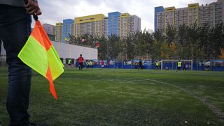
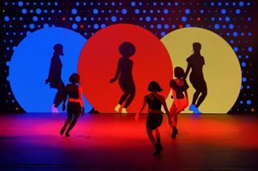

Más allá de las ponencias
UniForo no es solo escuchar: durante los tres días podrás aprender haciendo, competir y disfrutar de la programación cultural del campus. Estas son las actividades organizadas por categorías:
- Talleres
- Tecnología
- Contenedores con Docker
- IA generativa aplicada
- Desarrollo web con HTML5 y CSS3
- Empleabilidad
- Cómo preparar un CV técnico
- Simulacro de entrevista
- Tecnología
- Deportes
- Torneo de fútbol sala
- Carrera solidaria de 5 km
- Ajedrez rápido
- Cultura
- Concierto de clausura
- Muestra de danza
- Exposición «Historia de la informática»
Cómo participar
- Formaliza tu inscripción en el evento.
- Elige las actividades que te interesen en el formulario.
- Recibirás una confirmación por correo electrónico.
- Presenta tu credencial en la entrada de cada actividad.
Galería


